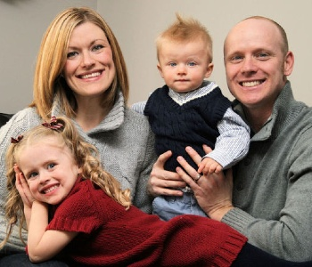
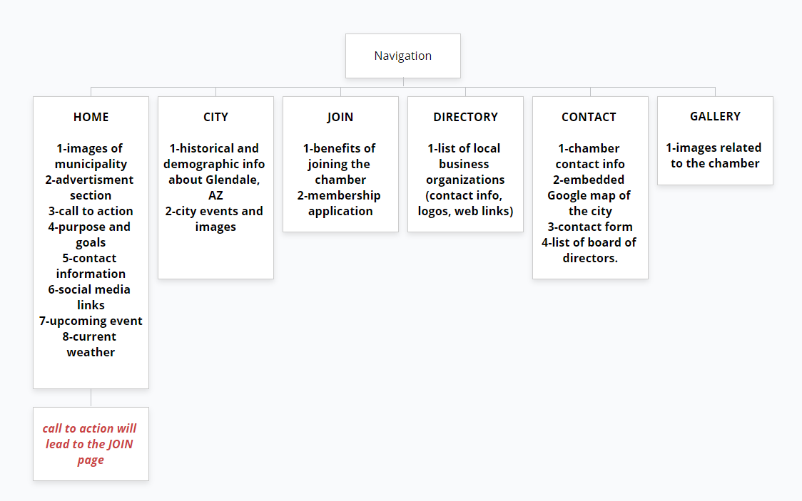
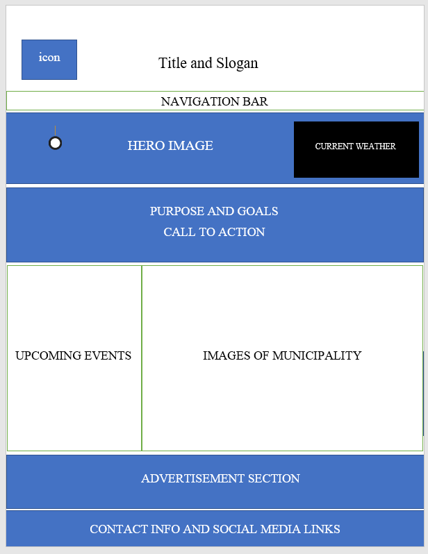
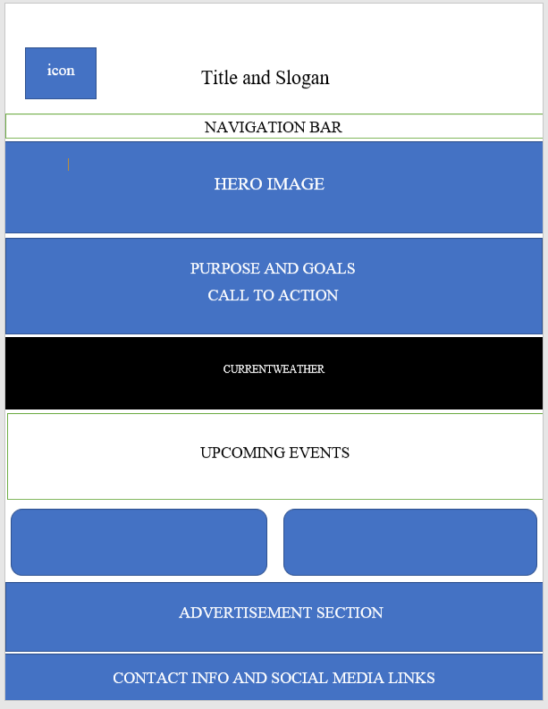

Term Website Planning Document
Alejandra Black-WDD 230
Site's Purpose
The "Glendale City Chamber of Commerce" site's primary purpose is to provide easy access to our members, future members, and visitors with the necessary tools to succeed as business owners and help them be an active force in our community. This will be achieved using clear sections throughout the site that will promote the business interests of the members of the organization. The site will also promote the area through images and its member's testimonials of the benefits of being part of the chamber. It will also contain pages with easy access to details about the upcoming events, contact and city information, directory guide of the local business, activities, classes, etc.
Target Audience Description
The target audience of "Glendale City Chamber of Commerce" description is as follow:
- Who:Mainly adult business owners or those considering starting their own businesses.
- Age: 18 and up.
- Technology:The audience will access the site through movil devices like cell phones and i-pads,but also through laptops or desktops.
- Income:Income types will vary according to age, levels of education or work experience.( medium of $50,000 and above annually).
- Motivation:networking opportunities, desire to bring credibility to their business or to shape the future of education in their areas by working with other business leaders and government officials; chances to have opportunities to mentor or assist new enterprises to or to seek assistance from others with more experience; acquire referrals from customers, have a voice in their local government, participate in different training that will help improve their skills, etc.
Personas
Cindy and Lucy Stevens
- Occupation:Cindy and Lucy are mother and daughter who have owned their family business for generations.
- Demographic and Education:They both live in Litchfield,Glendale area. Cindy is the mother who lives with her husband in a quite neighbordhood. Lucy is her daugther and also business partner in one of their local and well known bakeries. She lives only a few blocks away from her, with her husband Peter and 5 children. They both have a bachelor's degree in Business Managment from the Arizona State University, and a degree in Culinary Sciences from the Arizona Culinary Institute.
- Goals and motivation for using the site:Strong desire to be involved in thier community by helping new business owners learn managment skills. They also look for opportunities to be involved in classes where they can learn new strategies for success in thier bakery. They like to be informed and have a network of associates who know and understand how to run a successful business with quality in customer service. They try to find out about events that may help them be involved in their local goverment as well.
- Social:For them, family comes first so they try to spend as much time with family as possible and they also look for opprtunities to participate in local chamber events that could give them chances to meet new people who love to be involved in business matters as much as they do.
- Technology:They use desktops at the bakery, but most of the time thier main source of technology are thier phones, which they take with them everywhere for easy access and reliability.
- Quote:"We love what we do and love to share it with others through our bake goods and great customer service."
Albert Simons
- Occupation:Albert is a young father who just left his occupation as a veterinary in the local Air Force Base. Now he is the proud owner of a small ranch in Glendale rural area. He has loved being involved with farm animals since his childhood and now he started his own horse riding teaching business and veterinary health care services with his wife Amy.
- Demographics and Education:He is 37 years old and has a master's degree in Veterinary Sciences. He worked for the Airforce for 5 years as a vet, but now he has saved enough money to follow his passion and start a family business.
- Social:Albert is a family man. He is always very active and like to be involved in family activities. Enjoys activities like:bicycling, running, fishing and soccer. He also likes to spend quality time outdoors with his wife Amy and two children, Elisa (5) and Sebastin (2)
- Technology:Albert is very knowlegeable in technologies. For work purposes he likes to use his laptop, but most of the time he uses his cell phone to look up the news or communicate with his customers. He likes the easy accessibility it provides.
- Quote:"When we follow our passions we can't go wrong!"
Scenarios
- What can I do to help others succeed in their businesses?
- How can I be more involved in local goverment?
- Where can I go to take classes in finances that will help me manage my business better?
- I couldn't make it to the chamber's member metting this month. I wonder if the site has posted information about it.
- I would like to know what kind of weather Glendale will have this week as I get ready to promote my business with new advertisement ideas.
- What can I do to make more network conections this season?
- I wonder if I can see images of the other local business in this site and maybe get some good ideas of how to improve my own.
Branding
Site's Name:"Glendale City Chamber of Commerce"
Site Logo
Color Scheme
| Primary | Secondary | Accent 1 | Accent 2 | Accent 3 | Accent 4 |
|---|---|---|---|---|---|
| [#FFFF] | [#E5E5E5] | [#0000] | [#FCA311] | [#D00000] | [#465362] |
Typography
Font-family: Poppins, Sans-serif, and Open Sans.
| Item | Font | Size | Background | Typography Color | Sample |
|---|---|---|---|---|---|
| Site Header | Poppins | 30px | #FFFF | #000000 | Sample |
| Navigation Bar | Poppins | 22px | #000000 | #FFFF | Sample |
| Heading 1 | Poppins | 25px | n/a | #000000 | Sample |
| Heading 2 | Poppins | 23px | n/a | #000000 | Sample |
| paragraphs | Open Sans | 18px | #D00000 | #FFFF | Sample |
| paragraphs | Open Sans | 18px | #FCA311 | #000000 | Sample |
| paragraphs | Open Sans | 18px | #465362 | #FFFF | Sample |
| paragraphs | Open Sans | 18px | #FFFF | #000000 | Sample |
Navigation
Site Map
Created @ https://www.gloomaps.com/vido7ANJEl
Wireframes
Large view
Medium View
Small View